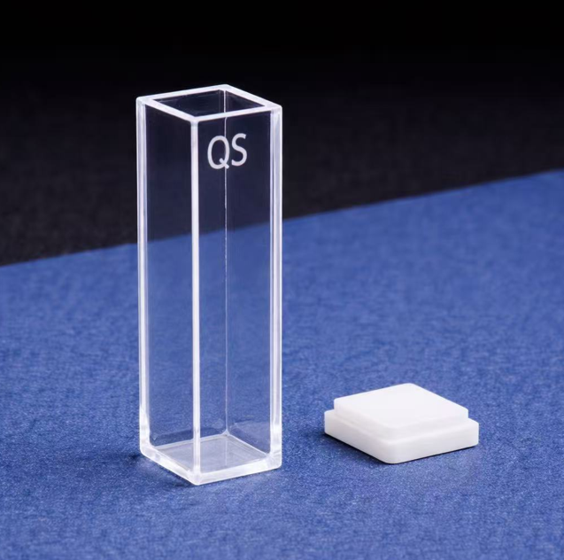

This quartz cuvette is designed for UV/VIS/NIR absorbance and fluorescence measurements, suitable for routine laboratory analysis and research applications.
| Product / Part No. | Dimensions | Sample Volume | Pathlength | Cover Type | Exterior Dimensions | Price |
|---|---|---|---|---|---|---|
 |
W×L 10×10 mm | 3.5 ml | 10 mm | Stopper | 12.5W × 12.5L × 45H mm | $134 |
 |
W×L 10×10 mm | 3.5 ml | 10 mm | Flat lid | 12.5W × 12.5L × 45H mm | $134 |
|
W×L 10×10 mm | 3.5 ml | 10 mm | Screw cap | 12.5W × 12.5L × 52H mm | $179 |
Customers can enter their name, email, requested quantity, and any special notes in the form below. This makes the page suitable for a simple frontend order request page.
You can continue adding more sections here, such as shipping information, refund policy, FAQ, testimonials, or technical specifications.